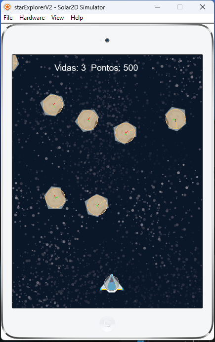

Projetos em LUA
Jogo do Balão
O jogo do balão foi um dos primeiros jogos completos feitos em aula, era um simples jogo onde o balão não podia encostar na plataforma, foi utilizado para demonstrar a física, no caso a gravidade, e como ela interagia com os corpos físicos.
Acesse o link a seguir para ir para a página do Github e poder baixar este jogo: Clique aqui!
Jogo Revisão
Este jogo serviu como revisão de conteúdo, baseado no que tinhamos aprendido em aulas anteriores, deveriamos criar algo diferente, foi utilizado física, possuia sons, tiros, objetivos.
Acesse o link a seguir para ir para a página do Github e poder baixar este jogo: Clique aqui!
Star Explorer
Este Jogo apresentou duas versões sendo que esta foi a final, foi incluido menus e contagem de pontos ao final.
Acesse o link a seguir para ir para a página do Github e poder baixar este jogo: Clique aqui!
Liquid Fun
Este foi um dos últimos jogos feitos em aula, ele mostrava a simulação de líquidos e suas interações com outros corpos físicos.
Acesse o link a seguir para ir para a página do Github e poder baixar este jogo: Clique aqui!
Cleric Survivor
Este foi um projeto pessoal, baseado no estilo Vampire Survivor, feito para revisar os conteúdos aprendidos em aula durante o curso. No momento está incompleto.
Acesse o link a seguir para ir para a página do Github e poder baixar este jogo: Clique aqui!